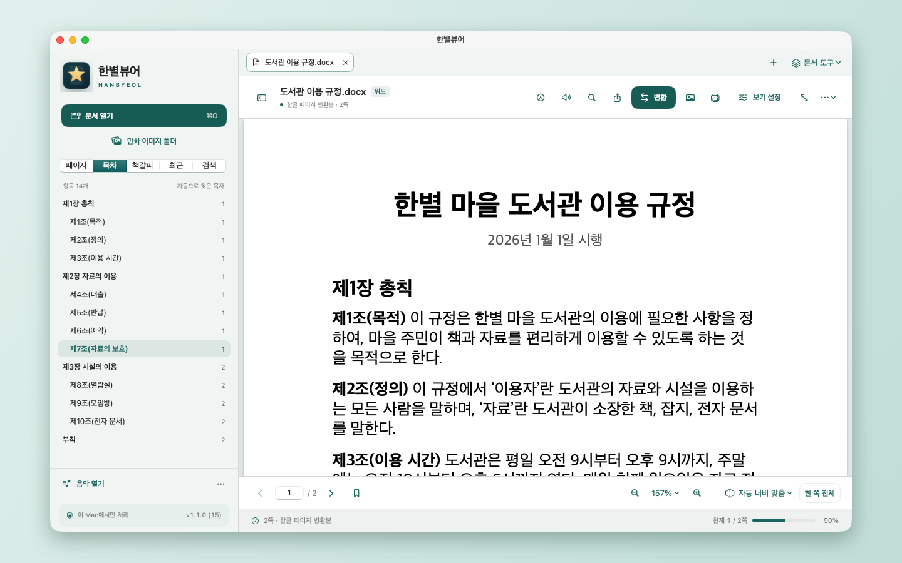
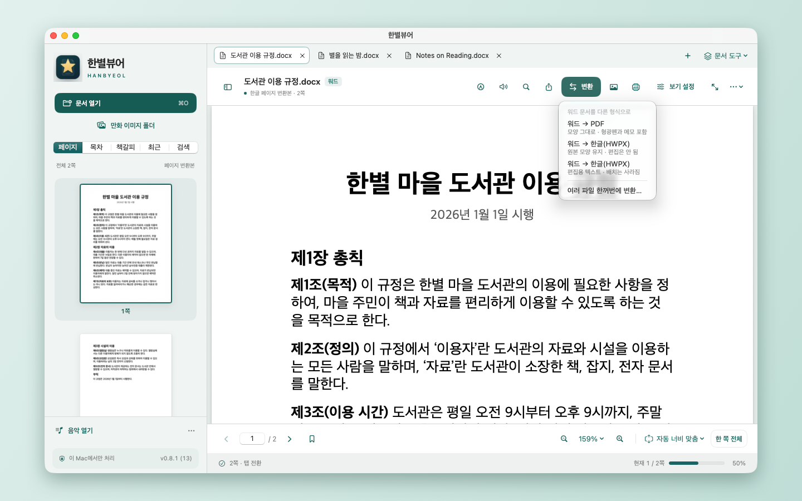
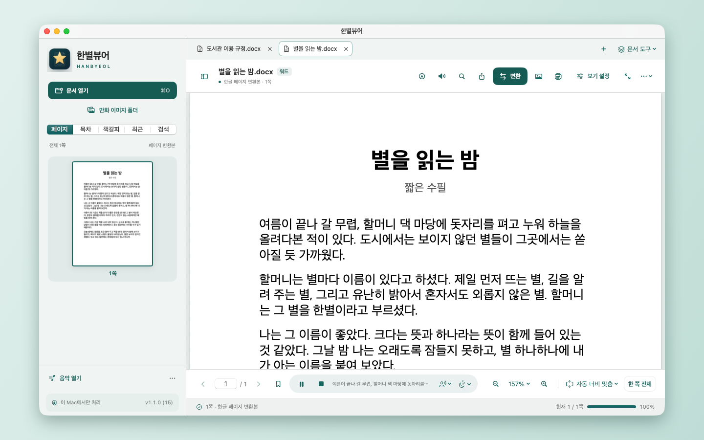
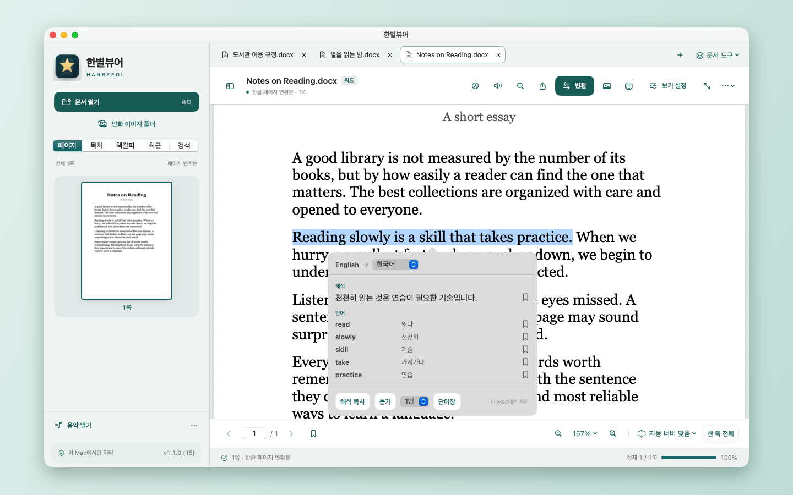

맥에서 한글(HWP·HWPX) 파일을
여는 뷰어, 한별뷰어
맥북에서 한글 파일이 안 열릴 때 쓰는 무료 뷰어입니다. HWP·HWPX와 PDF를 열고, PDF로 바꿔 저장하고, 소리로 듣고, 모르는 문장은 그 자리에서 번역합니다.
Mac App Store에서 무료로 받기무료 · 광고 없음 · 계정 없음 · macOS 14 이상(Apple 실리콘 Mac)

맥북에서 한글 파일 열기 (HWP·HWPX)
맥북에 한글(한컴오피스)이 없어도 한글 파일을 바로 엽니다. 메일이나 공문으로 받은 HWP, 요즘 많이 쓰는 HWPX 모두 됩니다.
- HWP · HWPX · PDF · 워드(DOCX · DOC · RTF) 열기
- 너비 맞춤, 페이지 전체, 두 쪽 보기, 글자만 크게 읽는 텍스트 읽기
- 목차(없으면 편·장·절·조 제목을 찾아 자동으로 만듦), 책갈피, 문서 안 검색
- 형광펜, 밑줄, 메모
HWP를 PDF로, PDF를 한글·워드로 변환
변환 사이트에 파일을 올리지 않습니다. 변환은 Mac 안에서 이루어지므로 회사 문서나 개인 서류도 밖으로 나가지 않습니다.
- HWP · HWPX → PDF 변환
- PDF → 한글(HWPX), 워드(DOCX)로 저장
- 여러 파일 한꺼번에 변환(일괄 변환)
- 쪽 추출, PDF 합치기
- AirDrop, 메일, 메시지로 공유

한글·PDF 문서 읽어주기(TTS)
문서를 소리 내어 읽어 줍니다. 긴 보고서나 PDF 전자책을 눈으로 따라가지 않고 들을 수 있습니다.
- 한국어 목소리 10가지, 속도 조절
- 취침 타이머: 정한 시간 뒤, 또는 이 쪽·이 장이 끝나면 멈춤
- 내 음악 파일을 틀어 놓고 PDF 전자책이나 만화 읽기

PDF 번역과 단어장
영어 PDF를 읽다가 글자를 선택하면 해석과 낱말 뜻이 바로 나옵니다. 번역도 Mac 안에서 처리합니다. (macOS 15 이상)
- 선택한 문장의 해석과 낱말 뜻 표시
- 낱말과 문장을 단어장에 저장
- 단어장 복습 카드, Anki로 내보내기
- 글을 쓰면 옆에 번역이 나오는 번역 문서

맥북 쓰는 대학생에게: 한글 없이 과제·논문 보기
교수님이 올린 한글 파일이 맥북에서 안 열릴 때, 한컴오피스를 사거나 설치하지 않아도 됩니다. 받은 자료를 열어 보고, PDF로 바꿔 내고, 영어 논문은 모르는 문장만 번역하며 읽을 수 있습니다.
한글 없이 HWP 열기
강의 자료, 공지, 기출 자료로 받은 한글 파일을 맥북에서 바로 봅니다. 무료이고 계정도 필요 없습니다.
과제는 PDF로 제출
한글 파일을 PDF로 바꾸고, PDF 여러 개를 하나로 합칩니다. 파일을 변환 사이트에 올리지 않습니다.
논문·전공책 PDF 번역
영어 논문을 읽다가 막히는 문장만 선택하면 해석과 낱말 뜻이 나옵니다. 문서 전체를 한 번에 번역하지는 않습니다. (macOS 15 이상)
PDF 읽어주기
한글로 된 강의 자료와 논문 PDF를 소리로 듣습니다. 음성은 한국어에 맞춰져 있습니다.
PDF 형광펜과 메모
중요한 곳에 형광펜과 밑줄을 긋고 메모를 답니다. 책갈피와 문서 안 검색으로 시험 범위를 빨리 찾습니다.
영어 단어장
모르는 낱말과 문장을 단어장에 모읍니다. 복습 카드와 Anki로 내보내기는 버전 1.1부터 됩니다.
그 밖의 기능
Finder에서 HWP 미리보기
HWP·HWPX 파일을 고르고 스페이스 바를 누르면 열지 않고 미리 봅니다. 파일 아이콘에도 첫 쪽이 보입니다.
만화 뷰어
CBZ · CBR · 이미지 폴더를 두 쪽 펼침이나 세로 이어 보기로 읽습니다.
개인정보
계정도 광고도 없고, 수집하는 정보가 없습니다. 변환·읽어주기·번역 모두 Mac 안에서 처리합니다.
자주 묻는 질문
맥에서 HWP 파일은 어떻게 여나요?
Mac App Store에서 한별뷰어를 받은 뒤, Finder에서 HWP 파일을 오른쪽 클릭해 ‘다음으로 열기 → 한별뷰어’를 고르면 됩니다. 한컴오피스가 없어도 열립니다.
맥북에서 한글 파일을 편집할 수 있나요?
아니요. 한별뷰어는 읽는 앱이라 문서를 고치는 기능이 없습니다. 내용을 고쳐야 하면 워드(DOCX)로 저장해 다른 앱에서 고칠 수 있습니다. 이때 글자만 들어가고 표와 배치는 빠집니다.
HWP를 PDF로 변환하려면 어떻게 하나요?
문서를 연 뒤 PDF로 저장하면 됩니다. 여러 파일을 한꺼번에 바꿀 수도 있습니다. 파일을 인터넷에 올리지 않고 Mac 안에서 변환합니다.
HWPX 파일도 열리나요?
네. HWP와 HWPX를 모두 엽니다. PDF와 워드(DOCX·DOC·RTF), 만화(CBZ·CBR)도 엽니다.
무료인가요?
네, 무료입니다. 광고도 없고 계정을 만들 필요도 없습니다.
아이폰이나 아이패드에서도 쓸 수 있나요?
지금은 Mac 전용입니다.
안 열리는 한글 파일도 있나요?
암호가 걸렸거나 DRM·배포용으로 잠긴 한글 문서는 열지 못합니다.
맥북에 한글(한컴오피스)이 없어도 한글 파일을 볼 수 있나요?
네. 한별뷰어는 한글(한컴오피스) 없이 HWP·HWPX 파일을 엽니다. 무료이고, 한컴오피스를 사거나 설치할 필요가 없습니다. 다만 보기와 변환만 되고 편집은 안 됩니다.
맥북에서 한글 파일이 안 열릴 때는 어떻게 하나요?
macOS에는 한글 파일을 여는 앱이 들어 있지 않아서 그렇습니다. 한별뷰어를 설치한 뒤 파일을 오른쪽 클릭해 ‘다음으로 열기 → 한별뷰어’를 고르세요. 암호가 걸렸거나 DRM·배포용으로 잠긴 문서는 열리지 않습니다.
한글 파일을 PDF로 바꿔 과제로 제출할 수 있나요?
네. 문서를 열고 PDF로 저장하면 됩니다. PDF 여러 개를 하나로 합칠 수도 있습니다. 내용을 채워 넣어야 하는 과제 양식은 한별뷰어에서 고칠 수 없으므로, 워드(DOCX)로 저장해 다른 앱에서 작성해야 합니다. 이때 글자만 들어가고 표와 배치는 빠집니다.
영어 논문 PDF를 번역해 주나요?
읽다가 선택한 문장의 해석과 낱말 뜻을 보여 줍니다. 문서 전체를 한 번에 번역하지는 않습니다. 번역은 macOS 15 이상에서 동작합니다.
PDF를 읽어주는 기능이 있나요?
네. PDF와 한글 문서를 소리로 읽어 줍니다. 음성은 한국어에 맞춰져 있어 한글로 된 문서에 알맞습니다.
알아 두실 점
- 문서를 고치는 편집 기능은 없습니다.
- 워드로 저장하면 글자만 들어가고 표와 배치는 빠집니다.
- 읽어주기 음성은 한국어에 맞춰져 있습니다.
- 번역과 단어장은 macOS 15 이상에서 동작합니다.
- 한컴오피스가 설치된 Mac에서는 Finder 미리 보기에 한컴오피스의 미리 보기가 나옵니다.
- 인터페이스 언어: 한국어, 영어, 일본어, 중국어(간체), 러시아어, 스페인어
개인정보 처리방침
한별뷰어는 사용자의 개인정보를 수집하지 않습니다. 계정을 만들지 않고, 사용 기록이나 기기 정보를 모으지 않으며, 광고나 분석 도구를 넣지 않았습니다. 사용자가 연 문서와 책갈피·메모·단어장은 Mac 안 앱 전용 폴더에만 저장하고 외부 서버로 보내지 않습니다.